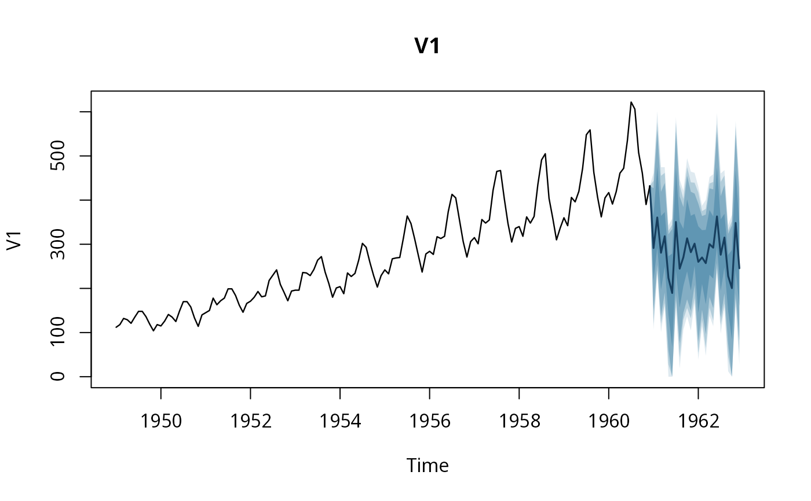

Zero-shot probabilistic forecast with 21 quantiles per step.
Usage
timestral_forecast(
model,
y,
h,
observation_mask = NULL,
past_covariates = NULL,
known_covariates = NULL,
categorical_past_covariates = NULL,
categorical_known_covariates = NULL,
symmetric = TRUE,
clip_nonnegative = TRUE
)Arguments
- model
a
timestral_model- y
numeric vector,
ts/mts,zoo/xts(index preserved), atsibble(keys become the batch, measured variables the jointly forecast variates), matrix or data frame with time in rows and one column per target variate, a 3-D array (time, variate, series), or a list of per-series vectors/matrices (NA = missing). The series of a list (or the key groups of a tsibble) may differ in length: they are taken to end at the same time, the forecast origin, and shorter ones are left-padded with missing values, which does not change their forecasts. A list keeps the longest series' time index when every other series' index is its tail (forts, the same frequency and end). Variates of a series are forecast jointly; series in a batch are forecast independently in one call. Covariates may also bets/zoo/xtsortsibble; when bothyand a covariate carry a time index, the covariate index must align with the context (and future) index ofy. Tsibble rows are taken in index order, and implicit gaps in a regular tsibble are filled with missing values; the keys of a keyed tsibble covariate are matched to the series ofyby value.- h
horizon in steps: a single whole number between 1 and 10000
- observation_mask
optional logical shaped like
y(for a tsibbley, a tsibble with logical measured variables); FALSE or NA marks additional missing values- past_covariates
known over the context only (T time rows, or the batch forms described for
y; in a batch of unequal lengths, a shorter series' covariates may have its own length, and are padded like it)- known_covariates
known over context and horizon (T + h time rows)
- categorical_past_covariates
category codes known over the context only; target-encoded per series (used as-is when a series has several target variates)
- categorical_known_covariates
category codes over context and horizon
- symmetric
average with the forecast of the mirrored series (package default)
- clip_nonnegative
clip at 0 when every observed target value is >= 0
Value
a timestral_forecast: for one series, quantiles is a
(variate, horizon, level) array; for a batch, (series, variate, horizon,
level). Also holds the observed context values (with NA for missing),
and the context index and future_index when y carried a time
index (ts, zoo, xts); the future index extends the last observed
interval.
Examples
## the tiny bundled checkpoint runs offline but its forecasts are
## meaningless; use timestral_load("5M") or larger for real ones
m <- timestral_load(system.file("extdata", "tiny", package = "timestralR"))
## univariate ts: index preserved, fan chart and ts accessors work
fc <- timestral_forecast(m, AirPassengers, h = 24)
plot(fc)

timestral_median(fc)
#> Jan Feb Mar Apr May Jun Jul Aug
#> 1961 291.3287 360.7115 280.6464 318.2002 223.7060 189.5016 350.5766 244.7158
#> 1962 260.1235 270.1221 257.1679 300.3938 292.1597 363.0654 276.1783 315.2443
#> Sep Oct Nov Dec
#> 1961 270.5898 313.5198 281.9475 301.3957
#> 1962 227.9375 200.5240 348.4063 245.5896
## multivariate: columns of y are forecast jointly
fc2 <- timestral_forecast(m, cbind(mdeaths, fdeaths), h = 12)
## zoo/xts inputs keep their time index (needs the zoo package)
if (requireNamespace("zoo", quietly = TRUE)) {
months <- seq(as.Date("1949-01-01"), by = "month",
length.out = length(AirPassengers))
yz <- zoo::zoo(as.numeric(AirPassengers), order.by = months)
fc3 <- timestral_forecast(m, yz, h = 24)
head(as_forecast_df(fc3)) # time column holds Dates
}
#> variate step q01 q05 q10 q15 q20 q25
#> 1 V1 1 106.9023 120.40530 149.92005 169.84346 190.34818 218.01052
#> 2 V1 2 231.3047 242.03216 254.04978 264.72133 284.53788 292.19131
#> 3 V1 3 100.4614 120.03392 136.70915 161.92315 175.42542 196.75721
#> 4 V1 4 159.3936 167.50179 190.45405 207.53657 236.60040 249.48967
#> 5 V1 5 0.0000 28.21187 60.50897 97.67266 118.21045 140.10796
#> 6 V1 6 0.0000 0.00000 0.00000 0.00000 43.43788 67.45175
#> q30 q35 q40 q45 q50 q55 q60 q65
#> 1 230.39350 247.9832 258.4015 270.8675 291.3287 306.6497 320.4465 336.8211
#> 2 305.58492 321.5659 336.5749 349.8425 360.7115 374.2950 396.8590 426.6821
#> 3 217.98234 241.6261 262.4155 273.9271 280.6464 291.6175 316.4441 334.7943
#> 4 264.38486 277.2690 295.4393 307.2513 318.2002 327.8465 339.3366 352.3464
#> 5 160.86739 180.1402 197.1928 210.4399 223.7060 234.8655 242.7006 253.9562
#> 6 87.83268 126.7803 162.0038 176.2175 189.5016 200.8781 226.3024 247.4389
#> q70 q75 q80 q85 q90 q95 q99 time
#> 1 353.3772 363.7493 379.3085 398.3136 426.9252 443.8416 461.7679 1960-12-31
#> 2 440.6685 475.1168 494.0194 510.6668 558.2604 576.4513 601.1172 1961-01-30
#> 3 349.0384 364.0147 382.3532 399.8282 418.9652 455.0305 474.5209 1961-03-01
#> 4 361.3803 372.7738 385.7024 414.7688 438.8481 461.5980 474.5175 1961-03-31
#> 5 263.4923 272.8899 292.2093 312.5088 322.5853 330.3361 342.4975 1961-04-30
#> 6 267.5676 278.8517 295.7273 318.3068 334.6955 344.1816 358.1365 1961-05-30
## tsibble input: keys become the batch (needs the tsibble package)
if (requireNamespace("tsibble", quietly = TRUE)) {
fc4 <- timestral_forecast(m, tsibble::as_tsibble(AirPassengers), h = 24)
tsibble::as_tsibble(fc4)
}
#> # A tsibble: 24 x 23 [1M]
#> variate q01 q05 q10 q15 q20 q25 q30 q35 q40 q45 q50
#> <chr> <dbl> <dbl> <dbl> <dbl> <dbl> <dbl> <dbl> <dbl> <dbl> <dbl> <dbl>
#> 1 value 107. 120. 150. 170. 190. 218. 230. 248. 258. 271. 291.
#> 2 value 231. 242. 254. 265. 285. 292. 306. 322. 337. 350. 361.
#> 3 value 100. 120. 137. 162. 175. 197. 218. 242. 262. 274. 281.
#> 4 value 159. 168. 190. 208. 237. 249. 264. 277. 295. 307. 318.
#> 5 value 0 28.2 60.5 97.7 118. 140. 161. 180. 197. 210. 224.
#> 6 value 0 0 0 0 43.4 67.5 87.8 127. 162. 176. 190.
#> 7 value 157. 174. 187. 210. 228. 241. 267. 284. 317. 331. 351.
#> 8 value 18.6 43.9 75.2 98.3 127. 156. 173. 186. 200. 220. 245.
#> 9 value 106. 130. 145. 169. 186. 206. 217. 224. 238. 257. 271.
#> 10 value 137. 156. 175. 198. 220. 239. 248. 260. 281. 295. 314.
#> # ℹ 14 more rows
#> # ℹ 11 more variables: q55 <dbl>, q60 <dbl>, q65 <dbl>, q70 <dbl>, q75 <dbl>,
#> # q80 <dbl>, q85 <dbl>, q90 <dbl>, q95 <dbl>, q99 <dbl>, index <mth>